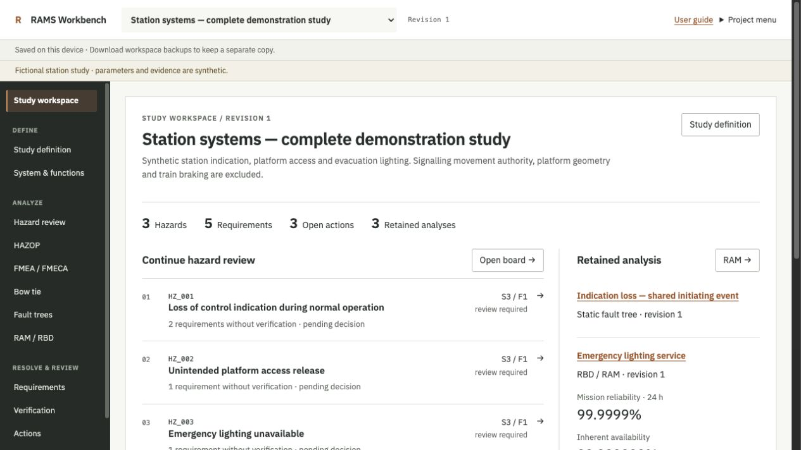
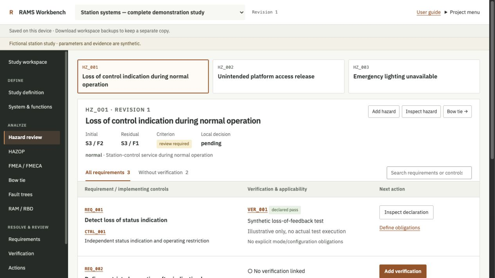
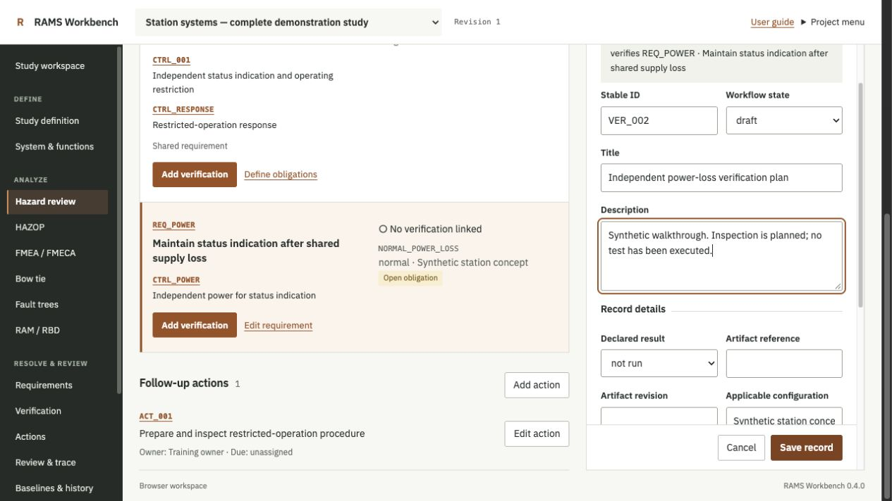

RAMS Workbench user guide
Version 0.4.0 · A practical guide to creating, analysing and reviewing an engineering study.
RAMS Workbench connects system definition, hazards, requirements, verification and retained reliability calculations. Start with the fictional station example to learn the workflow, then create a separate study for your own work. All example criteria, probabilities, rates and evidence are synthetic.
LEARN BY DOING
A guided station study
Follow the actual workbench screens from first opening through verification, analysis, review and recovery. The example is fictional. Narration uses a computer-generated voice; captions and a transcript are provided.
1. Open the workbench and protect your work
Open the browser workbench. Wait for the analysis engine to load. No account or local installation is required. The browser performs the calculations and stores applied changes on this device, under this site's address. It does not provide shared cloud storage or simultaneous team editing.
Check the saving status above the workspace. Saved on this device means applied changes have reached browser storage. Tab only means saving is unavailable: download a workspace backup before closing the tab. An editor contains an unsaved draft until you choose Save record. Clearing browser site data can remove stored studies.
For the local application, download and extract the app, open a terminal in the extracted folder and run python3 server.py. Open http://127.0.0.1:5186/ and keep the server running. Python 3.11 or newer is required. Local studies are stored in .local/studies.sqlite3; they are separate from the browser workspace. The local app needs no Python packages or account.
Use Project menu → Back up workspace to download a recovery copy of every study, history entry, baseline and retained run. Keep it outside the browser's site storage. Download a backup before a major change or moving to another device. The browser workspace has a 64 MiB limit; use the local app for larger workspaces.
2. Learn with the station example
Choose Explore the station example on the opening screen, or Project menu → Example studies → Complete station study. This creates a new editable copy; it does not replace an existing study. Choose it in the project selector if you have several studies.
Study workspace is your starting point. It shows hazards to continue reviewing, open actions and retained analyses. Select a hazard row to open its requirement board. Select a retained analysis to inspect the exact result and calculation basis. Counts describe recorded work; they are not a completeness or acceptance score.

3. Create and define your own study
Choose Project menu → New project, enter a title and choose Create project. In Study definition, record the boundary and interfaces, configuration, lifecycle phase, operating context, governing references and acceptance process. Save the setup before navigating away.
Add operating modes that you will use consistently in records and calculations. If you use a risk matrix, enter its ID, revision, source, severity classes and frequency classes. Choose Update matrix grid, fill the category for each applicable cell, then save. Missing cells remain unassessed. The tool does not supply a railway acceptance matrix or multiply ordinal risk classes.
4. Describe the system and its functions
Open System & functions. Use Equipment and Add item for distinct physical instances. Inspect an item to add a child item, allocate a function or analyse a failure mode. Use Functions, Interfaces and Operating modes for those records. Part types and other advanced record kinds are available through All records.
Keep each physical instance distinct. Two identical channels need two item IDs. A parent/child equipment tree describes physical containment; it does not define an RBD success model or hazard causality.
Scope: all systems filters supported record views by declared equipment allocations and containment. Use All systems to recover unallocated records. Retained RAM models keep their exact original topology when you change a record-view scope.
5. Review a hazard and follow its requirements
Open Hazard review and select a hazard. The heading keeps initial and residual classes, the matrix category, local decision, operating mode and boundary together. Use Add hazard to create a record, or Inspect hazard → Edit to change one.
Each board row contains one requirement, all its implementing controls, linked verification declarations, applicability and a next action. A shared requirement appears once with both controls. Select an ID or title to inspect the canonical record. Selecting a shared control highlights the requirement rows it affects.
Choose Without verification to find requirements with no linked declaration. This filter does not mean that every other requirement has adequate evidence. A declared pass can still have an undefined scope, an old requirement revision or an unmatched obligation. Use the search field for requirement/control IDs or titles; Clear search restores the rows after an empty result.
Use Inspect hazard to add or link controls, create implementing requirements, assign an action and record a local decision. Bow tie shows the hazard's declared causal paths and barrier allocations.

6. Define obligations and add verification
On a requirement, choose Define obligations or Edit requirement. Add an obligation ID, mode and configuration for each scope that requires verification. Save the requirement first; verification must refer to its current revision.
Choose Add verification from the relevant board row or requirement detail. The editor retains the requirement relationship and prefills available obligation, mode, configuration and requirement-revision fields. Give the declaration a useful title, then record the result, artifact reference and revision, configuration, applicability statement and reviewer declaration. An optional evidence file can be retained up to 32 KiB; use controlled references for larger material.
Choose Save record, then inspect the saved declaration. Back to board returns to the hazard. On a narrow screen the editor becomes the main view; Close or Cancel returns to record detail. Escape also closes the editor, with a discard confirmation when the draft has changes.
An unexecuted verification plan should remain not run. A passing declaration only covers an explicit obligation when its mode, configuration, obligation ID and requirement revision match. Saving a declaration does not accept a hazard or establish that the evidence is adequate.

7. Record a HAZOP examination
Open HAZOP. Create a study node with its design intent, operating mode and session context. Choose Add examination, select its Study node, then enter a parameter and guide word. Record the deviation, causes, consequences, safeguards, recommendation and participants where applicable.
Choose the examination disposition deliberately: finding, no issue, deferred or not applicable. Use a rationale appropriate to that disposition. A blank worksheet row is not a completed no-issue examination. Inspect a finding to link an existing hazard, create a linked hazard or assign follow-up work. Save before switching records.
8. Develop a FMEA or FMECA worksheet
Open FMEA / FMECA and select equipment, or use Open FMECA worksheet from an equipment record. Add a failure mode with its function, operating mode and causes. Describe local, next-level and end effects separately, then record detection, response/compensating provisions and criticality notes.
Select a worksheet row to edit it, follow equipment/hazard links or create an action. Use Link existing hazard when the hazard already exists; Create linked hazard creates the record and relationship together. Criticality notes retain your engineering assessment; they do not perform an RPN or handbook criticality calculation.
9. Inspect and allocate bow-tie controls
Open Bow tie and choose a hazard. Add causes and consequences, then allocate preventive controls to cause-to-hazard paths and mitigative controls to hazard-to-consequence paths. Allocate existing control reuses a canonical control. Controls linked to the hazard but not allocated to a path remain visible below the drawing.
Select a diagram node to inspect or edit its record. Use zoom controls and Actual size / Fit to view to read the drawing. Download SVG retains a vector drawing; Source JSON retains the declared view projection. Barrier placement shows allocation. It does not calculate effectiveness, independence or risk reduction.
10. Build and calculate a static fault tree
Open Fault trees. Add a top AND/OR gate, then add basic events or gates, or link an existing input. Reusing a basic-event ID preserves one Boolean event across branches. Create another ID only for a genuinely different event.
In Analysis setup, enter a name, top event, mode and mission horizon. Qualitative analysis returns minimal cut sets. For quantitative analysis, provide a probability and basis for each basic event at the same mode and horizon, and review the independence assumption. These inputs are probabilities, not failure rates.
Choose Check inputs to validate the basis without adding a run. Resolve a refusal, then check again. Analyze & retain run validates again and freezes the result with its inputs. Inspect the retained probability, cut sets and applicability. The station example's shared-event result is 0.044; adding its overlapping cut-set probabilities would incorrectly give 0.05.
Dynamic gates, dependent/common-cause models and event trees require other methods. The workbench does not silently approximate them as independent static events.
11. Prepare and retain a RAM study
Open RAM / RBD and choose New RAM study. Enter the success definition, mode, mission hours and active-repair target. Build the success model with series groups, active-parallel groups and distinct equipment instances. Shared physical support must appear once.
Use the input checklist and Edit inputs to complete each component: exponential model, positive failure rate [1/h], positive mean active repair time [h], operating mode, source, conditions and dependency-review rationale. The component mode must match the study. Unresolved dependencies, repeated instances, standby and shared repair are refused by this solver.
Choose Check inputs before Calculate & retain run. You can leave an incomplete RAM model as a draft and use Continue draft later. A retained run keeps its exact snapshot; later record edits do not rewrite it.
Read the quantities separately. Mission reliability is the probability of no mission failure, with no repair credited. Inherent availability is a separate steady-state quantity under the stated independent repair assumptions. Component maintainability is the active-repair-time CDF. Operational availability and an equivalent system MTBF are not inferred.
Use Analyze importance & sensitivity on a supported retained result to inspect component importance and one-at-a-time scenarios. These are conditional model results, not proof of real-world independence or uncertainty bounds.
12. Resolve actions and review the study
Open Actions to assign owners and due dates, follow engineering links, and filter open, overdue, unassigned or completed work. Record completion requires completion evidence. Completing an action does not automatically close a verification obligation or accept residual risk.
Review & trace provides technical findings, traceability/change review, and decisions with retained results. Select a finding to edit the relevant record or inspect its trace. These checks identify recorded-content and relationship issues; an empty findings list does not establish engineering adequacy or completeness of hazard identification.
A hazard decision is recorded separately through Inspect hazard → Record decision. Non-pending decisions require a declared authority, date, rationale, evidence and hazard basis revision. Later engineering changes require applicability review. These are local declarations, not authenticated approvals.
13. Retain a baseline and share the right output
Use Baselines & history → Freeze baseline to capture a named study revision. Compare a baseline with working content to inspect changes. Freezing a baseline preserves a snapshot; it does not approve it. Retained analyses keep the exact basis on which they were calculated.
Choose the output that matches the recipient's task:
| Output | Use it for |
|---|---|
| Download study | A portable read-only HTML with records, results and diagrams for review. |
| Download full archive | Project JSON, registers, history, baselines, retained runs, drawings and a bounded SysML projection. |
| Back up workspace | Complete SQLite recovery of every study and its database history. |
| SVG / Source JSON / full run | A particular drawing, view projection or exact calculation record. |
Import project previews project JSON and creates a new study identity. It does not restore complete database history. The SysML projection has declared semantic losses; keep its JSON sidecar. A browser-produced result and a native-Python result have different producer identities. Historical runs remain historical until you deliberately calculate a new result.
14. Recover from an interrupted or competing edit
If a required field is missing or a save is refused, correct it in the open editor; the draft remains there. If another tab/window changed the study, choose Compare latest revision. Review each conflicting field, choose your draft or the latest saved value, then Save combined record. Download my draft retains a separate copy before you leave.
In the browser, Project menu → Restore workspace backup inspects a backup and shows its study/record counts before replacement. Confirm only when it is the workspace you intend to restore. Download previous workspace recovers the immediately preceding workspace; keep independent backups for older versions. Replacing a workspace is different from importing one project.
For the local app, restore to a new database path with python3 -m rams.storage restore BACKUP.sqlite3 .local/recovered.sqlite3, then run python3 server.py --port 5188 --database .local/recovered.sqlite3. Inspect the restored work before changing your normal launch configuration.
If the engine stops or the saving status reports an interruption, retain the draft and download the saved workspace using the recovery control before reloading. Check the saved outcome before repeating a write.
Feature map
| Navigation | Main task |
|---|---|
| Study workspace | Continue hazard review, open actions and retained analyses. |
| Study definition | Set scope, configuration, modes, references and risk criteria. |
| System & functions | Record physical instances, functions and interfaces. |
| Hazard review | Inspect assessment, controls, requirements and verification together. |
| HAZOP / FMEA / FMECA | Develop node examinations and equipment failure analysis. |
| Bow tie / Fault trees / RAM / RBD | Develop causal or success models and supported calculations. |
| Requirements / Verification / Actions | Manage obligations, declarations and follow-up work. |
| Review & trace / Baselines & history | Review relationships, changes, decisions and retained revisions. |
| Method guide / All records | Read method boundaries and access the complete record library. |
The workbench supports a single engineer's bounded studies. It does not establish project-specific qualification, governing-standard compliance, evidence adequacy or safety acceptance. Select methods, review evidence and obtain acceptance through the process that governs your project.